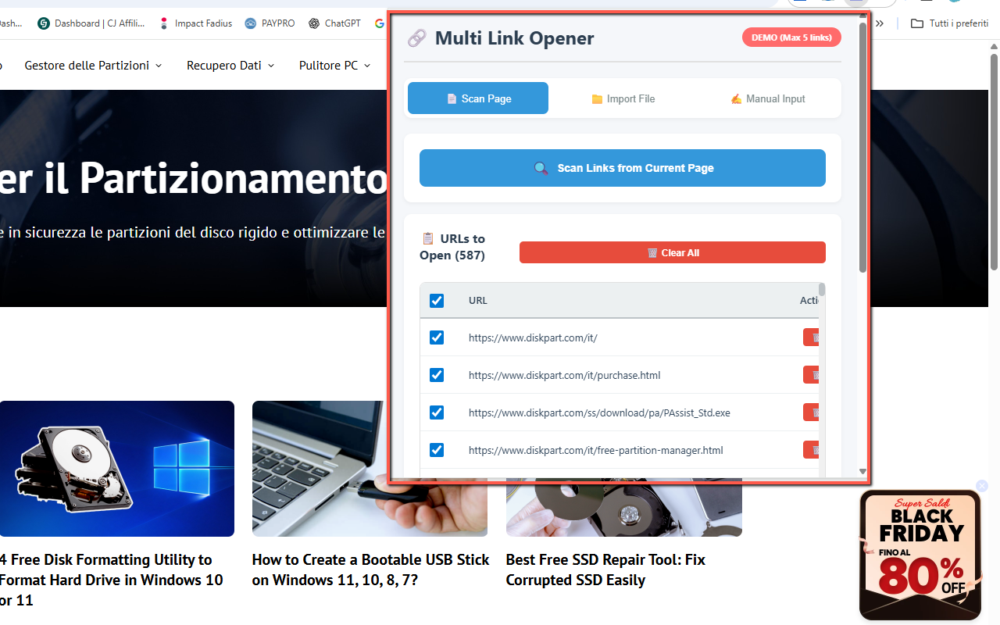
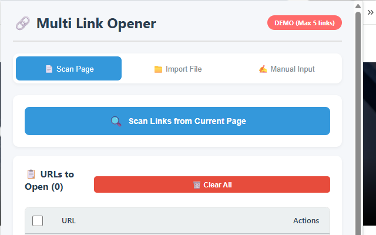

Multi Link Opener
Multi Link Opener is your ultimate bulk URL manager. Open tens or hundreds of links automatically with speed control and smart tab management. It’s perfect for productivity, research, QA testing, SEO tasks and any workflow where you need to open many URLs in one shot.
You can scan the current page to extract all links, import a .txt file with URLs, or paste/type URLs manually (one per line). Then choose which URLs to open, set the interval between tabs, optionally enable auto-close, and let the extension do the rest. The DEMO version opens up to 5 links at a time. The PRO version unlocks unlimited link opening with a one-time license code.
🚀 Quick Start
- Install Multi Link Opener from the Chrome Web Store
- Pin the extension icon next to the address bar for quick access.
- Choose how to load URLs:
- Scan Page – instantly extract all links from the current webpage.
- Import from File – upload a
.txtfile with one URL per line. - Manual Input – paste or type URLs directly into the text area.
- Adjust the opening speed (interval between tabs) and optionally set an auto-close timeout.
- Select which URLs you want to open and click Open Selected Links to start the batch.
📷 Screenshots


✅ Features
- Three import methods: scan current page, import from .txt file, or manual input (one URL per line).
- Adjustable opening speed – choose the delay between each opened tab (for example 0.5s – 5s).
- Auto-close tabs – optionally close opened tabs automatically after X seconds.
- Selective opening – use checkboxes to choose exactly which URLs to open.
- Real-time highlighting – visual feedback in the list as each URL is being opened.
- Automatic duplicate removal – avoid opening the same URL multiple times.
- URL validation – helps you detect invalid or malformed URLs before opening.
- Persistent settings – your last options (speed, auto-close, etc.) are remembered.
- Clean, modern UI with tab-based navigation and a real-time URL counter.
- FREE vs PRO: DEMO opens up to 5 links at a time; PRO unlocks unlimited links.
- Simple PRO unlock: enter your license code once; the extension stays in PRO mode.
- No external servers: all processing is done locally in your browser.
🔒 Permissions (and why)
- tabs — needed to open, manage and optionally close multiple tabs with your URLs.
- storage — used to remember your settings (speed, auto-close) and PRO activation status.
- activeTab — required when scanning the current page for links.
- scripting (or similar) — to inject a lightweight script that extracts links directly from the current page when you click “Scan Page”.
❓ FAQ
What can I use Multi Link Opener for?
It’s ideal for web developers, QA testers, SEO specialists, researchers, students and anyone who needs to open many URLs in one go (for example, checking a list of landing pages, loading multiple product URLs, or reviewing research links).
How many links can I open in the DEMO version?
The DEMO version lets you open up to 5 links at a time. This is enough to test how the extension works and see if it fits your workflow. The PRO version removes this limit and allows unlimited link opening.
How do I upgrade to PRO?
Purchase a license (lifetime, one-time payment) and then enter your PRO license code directly in the extension’s interface. Once activated, the extension switches to PRO mode and the link limit is removed.
Does the extension collect or send my data?
No. All processing is done locally in your browser. The extension does not upload your URLs or browsing data to external servers. Only basic settings (like speed, auto-close, and PRO status) are saved using Chrome’s local storage.
Does it work on all websites?
It works on almost any regular website and supports both HTTP and HTTPS URLs. It cannot operate on Chrome internal pages or special restricted pages due to browser limitations.
How can I contact support or buy a PRO license?
For support or purchase information, you can contact: webservice2t@gmail.com. You’ll receive a PRO license code that you can enter directly in the extension.